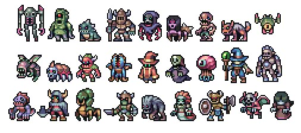

Референсный образец
Новый референс задаёт тёмный контур, компактные силуэты, приглушённые зелёные, фиолетовые и медные цвета. Для новых сцен используем нашу изометрию 4:3.
Файл reference.png открыт в модальном окне в исходном разрешении.